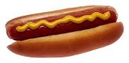

Hot-Dog recipe

Description
Beautiful hot-dog with a giant sausage
Best served hot with ketchup and mustard
Ingredients
- Hot-Dog bun
- Sausage
- Ketchup
- Mustard
- Fried onion
Steps
- Pre-heat the oven to 220°C. When ready, put two hot-dog buns in for 10 minutes
- Meanwhile, boil the sausages for 10 minutes
- When both buns and sausages are ready, stick the giant sausage into the warm bun
- Season with some ketchup, mustard nad fried onion
- Serve immediately after preparing